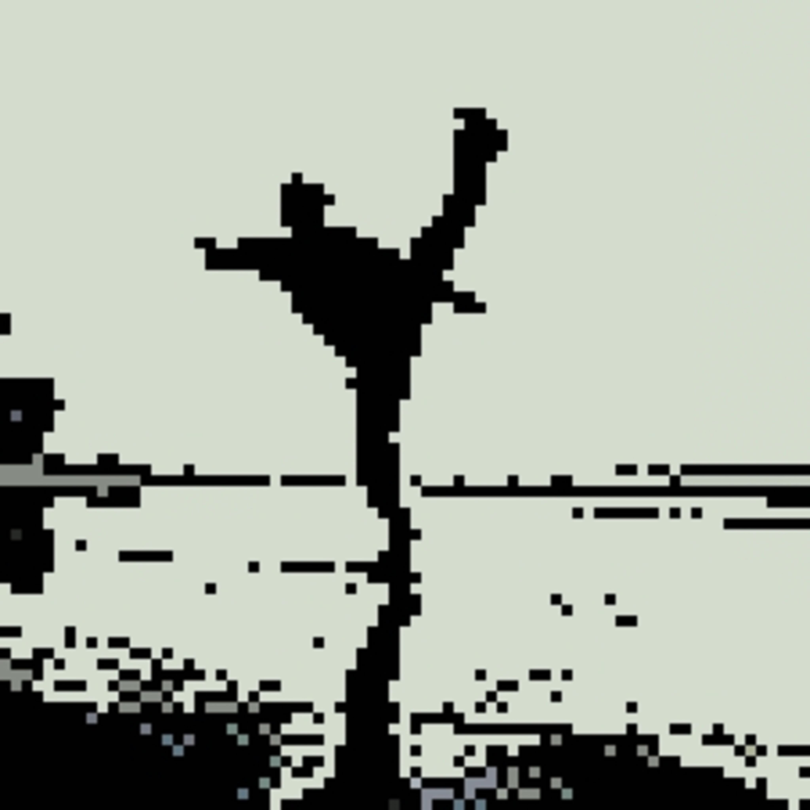

[ 0.602763] Kernel panic - not syncing: VFS: Unable to mount root is on unknown-block(0,0)
[ 0.603596] CPU: O PID: 1 Comm: swapper/ Not tainted 4.15.0-66-linux-g14 #75-0 Arch Linux
[ 0.604303] Hardware name: bruhhh GmbH VirtualBox/VirtualBox, BIOS Virtual Box 12/01/2006
[ 0.605076] Call Trace:

Collecting data for crash Dump:
Technical Skills:
- Core(EC): Verilog HDL, Migen (python based HDL) blog on Migen
- Proficient in C++ (STL) , Javascript (ES6, NodeJs) and Verilog HDL
- Exposure to Python, Bash, C, C#, VB(WinForms), Assembly (x86_64, MIPS, ARM) , Dockers, Windows Active Directory, Arch Linux
- Web Application and network penetration testing, Privilege Escalation, Reverse Engineering and Exploit development.
Projects:
- Bug Tracking System (Jan 2022): Github Link
Our submission for TRI-NIT hackathon 2022, considered under notable mentions, placing us fourth, Is a full-stack website built with MEN stack. The 24 hours hackathon was organized by three clubs from NITT, NITW, and NITK while sponsored by startups like Bharatx and had more than 2000 registrations. - RDNA2-Compute-Unit (IEEE-NITK, Dec 2021): Github Link
This project aims to recreate the RDNA-2 Compute Unit found in AMD's RX6000 series GPUs through the publicly available RDNA2 ISA documentation.
- YelpCamp : Live Link
Created as a part of Udemy Web-Dev Bootcamp, Became familiar and got a experience working with different npm packages for express and its integration with MongoDB while using passport for authentication. securing the site from common security vulnearabilities. - CTF type Platform (IEEE-NITK, Jan 2022): Github Link
Node(Ejs) Based CTF platform for hosting IEEE-NITK's Eureka 2022 final event. It is only one of its kind for a digital/analog Electronics event with features like an admin panel for managing challenges and timings. Leaderboards to display live score/position. - ClubsCafe (Backend, Oct 2021): Github Link
A express(node Js) backend API for a website which helps in managing competitions/events held across institutes. where one can showcase his awards, wins or held events with points system, leaderboards and much more. - wa-song (Whatsapp-Spotify Bot, Oct 2021): Github Link
bot based on nodejs that updates whatsapp status with currently playing song on spotify. - Robocraft Rainbow Text Generator (Mar 2015): Link
Adds color prefixes for upto 7 words for generating Rainbow like colors in Robocraft game's Chat. Robocraft is free-to-play action game in which we can build insane, fully customisable robot battle vehicles that drive, hover, walk and fly. - Auto Shutdown (Aug 2014): Link
Sets a Countdown as per given input at which the PC shuts down. Developed with Visual Basic - Other short School-Time Projects (2013): Link
Some of my winform applications developed with Visual basic. - Well Documented College Assignments:
Adding new Instructions to MIPS single cycle Processor Github Link
Check the pdf as images aren't added into readme.md.
Achievements:
- Academic:
- Fourth Position in TRI-NIT Hackathon Organized by three clubs from NITK, NITT, NITW (2022)
- Sports (State &+ ):
- Black Belt in Taekwondo(2014) cert
- Silver Medal at Invitational Inter-district Taekwondo tournament (2012) Dharwad, Karnataka cert
- Silver Medal at Taekwondo State Level Tournament(2012) Chitradurg, Karnataka cert
- Bronze Medal at Taekwondo State Level Tournament(2013) Kanteerava Indoor Stadium, Bangalore cert
- Bronze Medal at Taekwondo State Level Tournament(2014) Koramangla, Bangalore cert
- Bronze Medal at Taekwondo State Level Tournament(2015) Kanteerava Indoor Stadium, Bangalore cert
- Other:
- 161'st position, Top players(India) Clash Of Clans (Builder base) (2017) img
- Top Listener on Spotify (176,975 Minutes, More than 100% of the listeners in India) Spotify Wrapped 2021 img

Hobbies:
- Overclocking, Trying out different stuff like Linux distros or Custom ROMS
- Table Tennis, Taekwondo (xD been ages though)
- Trading CSGO/Steam Items.
- Gaming ( CSGO, Valorant, Battlefield, Planetside 2 ) [Steam]
- Helping peeps on Forums & FB groups Tomshardware XDA
- Listening to Music Some of my playlists: AnyT1me Lo3k8d